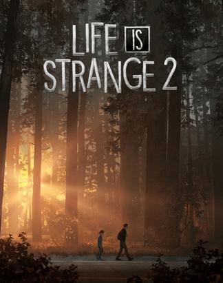
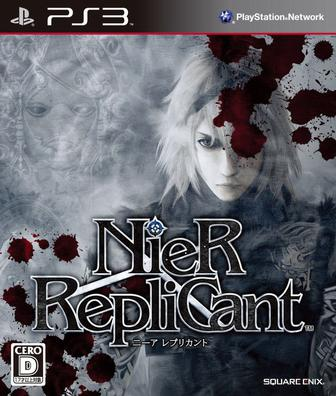
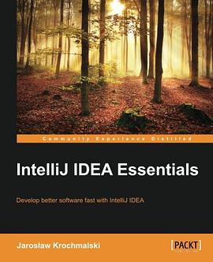
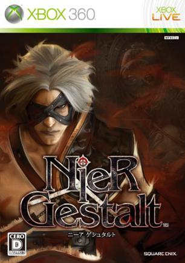
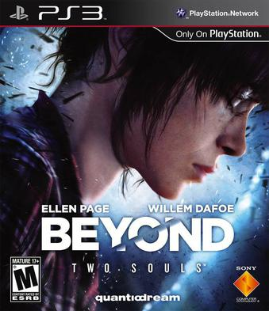
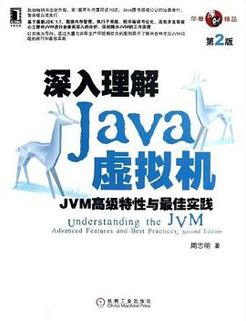
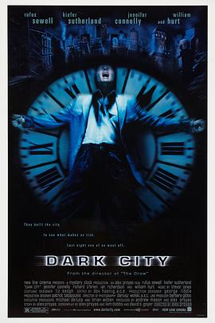
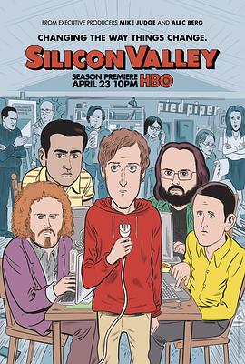
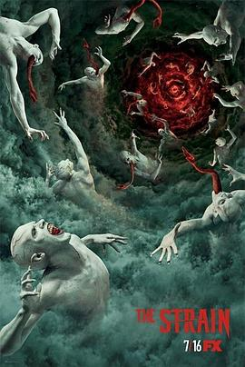
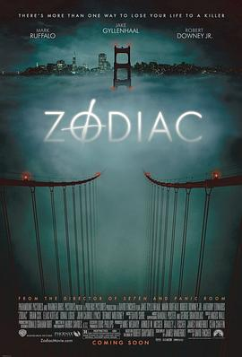

2018年2月 27 条
2018-02-28 18:28:28
想看 相对宇宙 第一季 / Counterpart Season 1
2018-02-28 17:30:17
想玩 魔法使之夜 魔法使いの夜
2018-02-25 17:25:01
想看 唐人街探案
据说更好看
2018-02-25 06:43:35
玩过 神秘海域3：德雷克的诡计 Uncharted 3: Drake’s Deception ★★★★☆
纯黑视频通关，游戏做的确实很棒，技术方面和设计方面都很出色
2018-02-24 14:08:31
看过 唐人街探案2
好看！好久没看到这么搞笑的喜剧了！
2018-02-22 20:03:43
玩过 奇异人生：暴风前夕 Life is Strange: Before The Storm ★★★☆☆
三章全部玩完，失望。剧情很短不说，Chloe和Racheal之间的友谊没有Max和Chloe之间的强烈，不够感人。就当是为LIS第一部补票了，LIS2观望。 //第一章玩完，很是失望。//没有max，Chloe竟然也没有max风格的衣服！有点小失望啊，不过游戏还没玩完，不多评论
2018-02-19 21:04:36

没有MAX的奇异人生不是人生
2018-02-16 18:51:19

虽然我视频通关的是xbox360的大叔版本，这个版本人设好多了，音乐和剧情都不错。剧情和那个版本是一样的，日文语音舒服多了 b(￣▽￣)d //搞了半天原来我看的游戏视频是NieR Gestalt的 =。= 这个交给youtube-dl挂机去了，回头看
2018-02-14 20:01:47

读了一下，我都会，看来这本书应该叫做Introduction to IntelliJ IDEA =。=
2018-02-14 19:18:15
说
当我没说，降了版本之后bootstrap jdk版本太高也编译不了，还是继续用高版本吧

2018-02-14 19:00:44
说
orz 看的jvm书已经过时了，心好累，很多模块被移除了，我还是降一下版本吧

2018-02-12 15:14:09

还不错，英文配音有点出戏，然后画面有点说不上来的怪。 //正在视频通关，然后玩去年预购但是一直没玩的nier automata =。= 屯游戏不玩是罪过啊：NIER - The Movie [All Cutscenes_Endings in 1080P]-fishmFc5N…
2018-02-11 11:55:38

2018-02-11 11:52:38
搞了半天原来我看的游戏视频是NieR Gestalt的 =。= 这个交给youtube-dl挂机去了，回头看
2018-02-11 11:45:47
正在视频通关，然后玩去年预购但是一直没玩的nier automata =。= 屯游戏不玩是罪过啊：NIER - The Movie [All Cutscenes_Endings in 1080P]-fishmFc5Ntk.mkv
2018-02-11 06:52:40
玩过 正当防卫3 Just Cause 3 ★★★★★
游戏很不错，cyberpunk风各种脑洞超级爽！几个DLC也很良心，都能玩到2小时以上！ //原评论：刺客信条通关了，准备继续刷这个。 //上次暑促还是入了，感觉很爽啊！有空玩玩~ //太好玩了，和幽灵行动荒野很像，可以玩100+小时，而且是农村包围城市的感觉，很不错已删（…
2018-02-10 18:05:16

工作已趋于稳定，准备寻求新刺激
2018-02-07 21:51:00
想看 无问西东
被安利了
2018-02-07 18:27:46

2018-02-07 18:25:57
想看 银翼杀手2049 / Blade Runner 2049
2018-02-06 16:15:35
看过 小林家的龙女仆 / 小林さんちのメイドラゴン ★★★★★
晕，当时刚播出来就看完了，忘了标记，反正很喜欢
2018-02-06 16:12:18

感觉工作清闲起来还是要玩玩安全，准备业余搞搞jvm安全了
2018-02-05 20:23:03
想看 硅谷 第五季 / Silicon Valley Season 5
2018-02-04 08:42:18

结局还是很仁慈的，欣慰；这一集最后还真是熊孩子拯救世界
2018-02-03 22:37:37
在看 血族 第四季 / The Strain Season 4
这一集如果熊孩子能拯救世界，我就相信他是隐藏的真正主角
2018-02-02 21:32:39

结局很不满意，然后这么长的电影。。。然后就更不爽了，只能说对话很多，适合练听力
2018-02-01 19:29:06
能预购的时候就steam预购